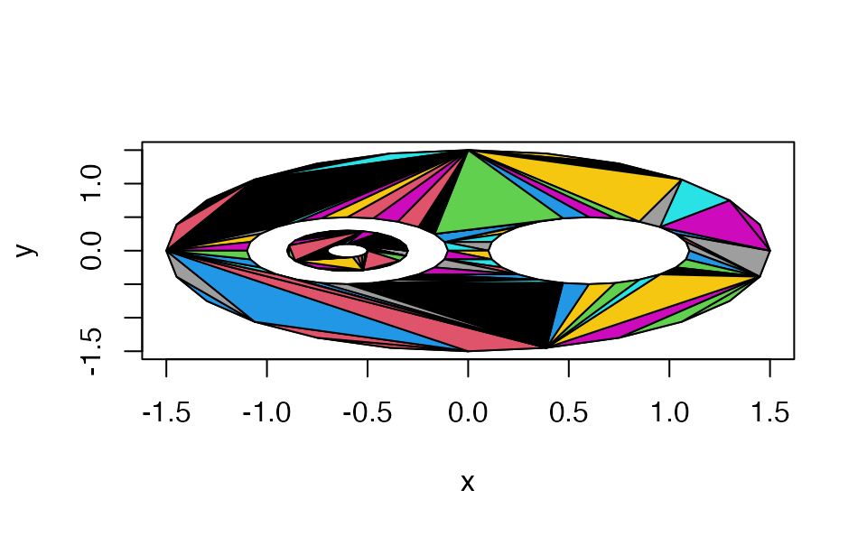

triangulate.RdThis algorithm decomposes a general polygon into simple polygons and uses the “ear-clipping” algorithm to triangulate it. Polygons with holes are supported.
triangulate(x, y = NULL, z = NULL, random = TRUE, plot = FALSE, partial = NA)Coordinates of a two-dimensional polygon in a format supported by xyz.coords.
See Details for a description of proper input and
how z is handled.
Currently ignored, the triangulation is deterministic.
Whether to plot the triangulation; mainly for debugging purposes.
Currently ignored. Improper input will lead to undefined results.
Normally triangulate looks only at the x and y
coordinates. However, if one of those is constant, it is replaced
with the z coordinate if present.
The algorithm works as follows. First, it breaks the polygon into
pieces separated by NA values in x or y.
Each of these pieces should be a simple, non-self-intersecting
polygon, not intersecting the other pieces.
(Though some minor exceptions to this rule may work, none
are guaranteed). The nesting of these pieces is
determined: polygons may contain holes, and the
holes may contain other polygons.
Vertex order around the polygons does not affect the results: whether a polygon is on the outside or inside of a region is determined by nesting.
Polygons should not repeat vertices. An attempt is made to detect if the final vertex matches the first one. If so, it will be deleted with a warning.
The “outer” polygon(s) are then merged with the polygons that they immediately contain, and each of these pieces is triangulated using the ear-clipping algorithm from the references.
Finally, all the triangulated pieces are put together into one result.
A three-by-n array giving the indices of the vertices of each triangle. (No vertices are added; only the original vertices are used in the triangulation.)
The array has an integer vector attribute "nextvert"
with one entry per vertex, giving the index of the next
vertex to proceed counter-clockwise around outer
polygon boundaries, clockwise around inner boundaries.
This function uses the C++ version of the
earcut library from https://github.com/mapbox/earcut.hpp.
Not all inputs will succeed, though inputs satisfying the rules listed in the Details section should.
theta <- seq(0, 2*pi, length.out = 25)[-25]
theta <- c(theta, NA, theta, NA, theta, NA, theta, NA, theta)
r <- c(rep(1.5, 24), NA, rep(0.5, 24), NA, rep(0.5, 24), NA, rep(0.3, 24), NA, rep(0.1, 24))
dx <- c(rep(0, 24), NA, rep(0.6, 24), NA, rep(-0.6, 24), NA, rep(-0.6, 24), NA, rep(-0.6, 24))
x <- r*cos(theta) + dx
y <- r*sin(theta)
plot(x, y, type = "n")
polygon(x, y)
triangulate(x, y, plot = TRUE)

#> [,1] [,2] [,3] [,4] [,5] [,6] [,7] [,8] [,9] [,10] [,11] [,12] [,13] [,14]
#> [1,] 88 114 88 90 92 94 96 98 76 78 80 82 84 86
#> [2,] 113 113 89 91 93 95 97 99 77 79 81 83 85 87
#> [3,] 112 88 90 92 94 96 98 76 78 80 82 84 86 88
#> [,15] [,16] [,17] [,18] [,19] [,20] [,21] [,22] [,23] [,24] [,25] [,26]
#> [1,] 88 115 88 92 96 76 80 84 88 116 88 96
#> [2,] 112 114 90 94 98 78 82 86 111 115 92 76
#> [3,] 111 88 92 96 76 80 84 88 110 88 96 80
#> [,27] [,28] [,29] [,30] [,31] [,32] [,33] [,34] [,35] [,36] [,37] [,38]
#> [1,] 80 88 117 80 118 80 118 80 119 80 120 80
#> [2,] 84 110 116 88 117 109 88 108 118 107 119 106
#> [3,] 88 109 88 109 88 108 96 107 96 106 96 105
#> [,39] [,40] [,41] [,42] [,43] [,44] [,45] [,46] [,47] [,48] [,49] [,50]
#> [1,] 121 80 122 80 123 80 124 96 101 96 52 39
#> [2,] 120 105 121 104 122 103 123 80 124 102 38 38
#> [3,] 96 104 96 103 96 102 96 102 96 101 37 52
#> [,51] [,52] [,53] [,54] [,55] [,56] [,57] [,58] [,59] [,60] [,61] [,62]
#> [1,] 64 13 15 17 19 21 23 1 3 5 7 9
#> [2,] 63 14 16 18 20 22 24 2 4 6 8 10
#> [3,] 13 15 17 19 21 23 1 3 5 7 9 11
#> [,63] [,64] [,65] [,66] [,67] [,68] [,69] [,70] [,71] [,72] [,73] [,74]
#> [1,] 11 13 53 40 65 13 17 21 1 5 9 13
#> [2,] 12 63 52 39 64 15 19 23 3 7 11 62
#> [3,] 13 62 37 52 13 17 21 1 5 9 13 61
#> [,75] [,76] [,77] [,78] [,79] [,80] [,81] [,82] [,83] [,84] [,85] [,86]
#> [1,] 54 40 66 9 55 41 67 9 55 41 67 9
#> [2,] 53 52 65 13 54 40 66 61 37 51 13 60
#> [3,] 37 51 13 61 37 51 13 60 36 74 17 59
#> [,87] [,88] [,89] [,90] [,91] [,92] [,93] [,94] [,95] [,96] [,97] [,98]
#> [1,] 56 42 68 5 56 42 69 5 56 43 70 5
#> [2,] 55 41 67 9 36 74 68 59 35 42 69 58
#> [3,] 36 74 17 59 35 73 17 58 34 73 17 57
#> [,99] [,100] [,101] [,102] [,103] [,104] [,105] [,106] [,107] [,108]
#> [1,] 57 43 71 5 43 71 5 44 5 44
#> [2,] 56 73 70 57 72 17 34 43 33 71
#> [3,] 34 72 17 34 71 21 33 71 32 21
#> [,109] [,110] [,111] [,112] [,113] [,114] [,115] [,116] [,117] [,118]
#> [1,] 5 45 5 46 1 47 1 48 1 49
#> [2,] 32 44 31 45 5 46 30 47 29 48
#> [3,] 31 21 30 21 30 21 29 21 28 21
#> [,119] [,120] [,121] [,122]
#> [1,] 1 49 1 26
#> [2,] 28 21 27 49
#> [3,] 27 1 26 1
#> attr(,"nextvert")
#> [1] 2 3 4 5 6 7 8 9 10 11 12 13 14 15 16 17 18 19
#> [19] 20 21 22 23 24 1 NA 49 26 27 28 29 30 31 32 33 34 35
#> [37] 36 37 38 39 40 41 42 43 44 45 46 47 48 NA 74 51 52 53
#> [55] 54 55 56 57 58 59 60 61 62 63 64 65 66 67 68 69 70 71
#> [73] 72 73 NA 77 78 79 80 81 82 83 84 85 86 87 88 89 90 91
#> [91] 92 93 94 95 96 97 98 99 76 NA 124 101 102 103 104 105 106 107
#> [109] 108 109 110 111 112 113 114 115 116 117 118 119 120 121 122 123
open3d()
polygon3d(x, y, x - y, col = "red")
3D plot